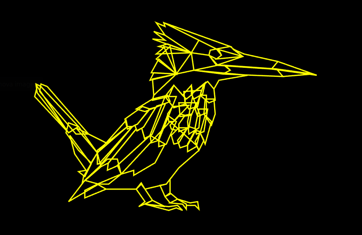
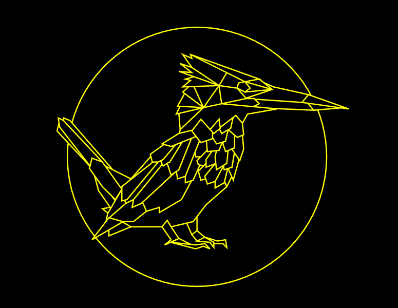
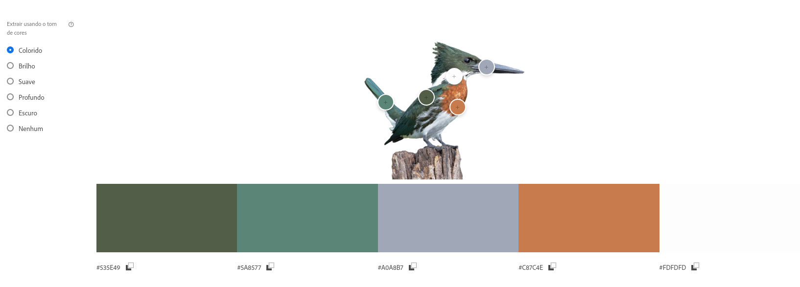
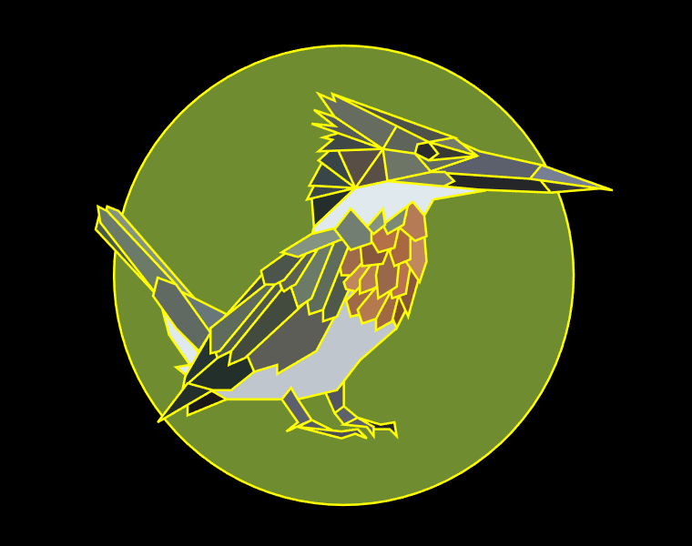

Amazon Kingfisher desenhado em SVG
Para esta parte do trabalho, escolhi fazer um desenho de uma das minhas aves favoritas, o Amazon Kingfisher.
Sobre o Amazon Kingfisher
O Amazon Kingfisher
(martim-pescador-verde), é uma espécie de ave encontrado em grande parte da
América
do Sul. Ele possui uma plumagem brilhante e colorida, com asas e cauda azuis-verde e peito laranja
brilhante, cabeça é azul-esverdeada com uma
mancha branca na garganta, e seu bico é longo e afiado.
Como o nome sugere, o martim-pescador-verde é especialista em pesca, e é frequentemente visto perto de
rios, lagos e córregos. Ele é capaz de mergulhar na água em busca de peixes, crustáceos e outros animais
aquáticos.

Construção do desenho em SVG
Para construir o desenho em SVG, primeiro escolhi uma imagem do Amazon Kingfisher (imagem acima) e depois a converti para SVG utilizando uma ferramenta do Adobe Express: Converter PNG em SVG. Depois disso, carreguei a imagem convertida no VS Cde e utilizei a extensão "SVG" para criar e visualizar polígonos, que mais tarde iram formar o desenho.

A extensão disponibiliza uma régua e cursor especial, o que permite indentificar as coordenadas dos polígonos a serem criado com maior facilidade. É possível notar alguns polígonos que se sobrepõem na imagem acima, mas isso não será um problema pois ao colorir os polígonos não será possível notar a sobreposição.
Agora adiciono um círculo com centro aproximadamente no meio do desenho.
Escolha da paleta de cores
Para escolher a paleta de cores, removi o fundo da imagem original do Amazon Kingfisher e extraí a paleta de cores utilizando o Adobe Color. Utilizando a mesma ferramenta, obtive cores análogas e sombras para colorir cada polígono com diferentes tons, conforme o que parecia mais adequado para cada polígono.
Colorindo o desenho
Já com a paleta de cores, o próximo passo foi colorir cada polígono.
Para colorir o círculo, selecionei uma cor que aparecia no fundo da imagem de referência e de modo que tal cor fosse harmônica com as outras cores utilizadas. E por fim colori as linhas de cada polígono com a mesma cor do polígono em questão. É importante fazer isso ao invés de apagar as linhas pois caso contrario existiriam "vãos" entre alguns dos polígonos.
Resultado Final
Por fim, adiciono as respectivas cores às bordas de cada polígono e obtenho o resultado à esquerda.
*obs: Algumas cores utilizadas para atingir o resultado final variam ligeiramente das cores encontradas no
Adobe Color.
Código SVG
<circle cx="130" cy="120" r="100" fill="#6F8C31"/>
<polygon style="fill:#525461; stroke:#525461; stroke-width:0.3" points="122,171 126,180 130,178 130,166 127,170"> </polygon>
<polygon style="fill:#bfc6ce; stroke:#bfc6ce; stroke-width:0.3" points="79,174 103,174 107,170 110,174 127,170 137,157 153,143 151,139 130,120 91,162 72,170"> </polygon>
<polygon style="fill:#323339; stroke:#323339; stroke-width:0.3" points="215,78 220,84 244,82"> </polygon>
<polygon style="fill:#252628; stroke:#252628; stroke-width:0.3" points="215,78 173,75 178,79 172,82 220,84"> </polygon>
<polygon style="fill:#777f94; stroke:#777f94; stroke-width:0.3" points="216,72 211,78 247,83 216,72"> </polygon>
<polygon style="fill:#5b606c; stroke:#5b606c; stroke-width:0.3" points="216,72 189,66 180,62 188,68 167,75 211,78"> </polygon>
<polygon style="fill:#757a69; stroke:#757a69; stroke-width:0.3" points="188,68 178,60 167,62"> </polygon>
<polygon style="fill:#4e5248; stroke:#4e5248; stroke-width:0.3" points="167,62 125,41 178,60"> </polygon>
<polygon style="fill:#373932; stroke:#373932; stroke-width:0.3" points="167,62 171,67 167,70 188,68"> </polygon>
<polygon style="fill:#626c61; stroke:#626c61; stroke-width:0.3" points="167,70 161,67 167,75 188,68"> </polygon>
<polygon style="fill:#5e6459; stroke:#5e6459; stroke-width:0.3" points="167,62 162,63 161,67 147,65 153,55"> </polygon>
<polygon style="fill:#38464a; stroke:#38464a; stroke-width:0.3" points="121,70 115,81 135,82"> </polygon>
<polygon style="fill:#38464a; stroke:#38464a; stroke-width:0.3" points="130,60 119,70 135,82 "> </polygon>
<polygon style="fill:#594e46; stroke:#594e46; stroke-width:0.3" points="135,82 125,60 147,65"> </polygon>
<polygon style="fill:#3f4846; stroke:#3f4846; stroke-width:0.3" points="147,65 128,58 121,60 125,61 119,66"> </polygon>
<polygon style="fill:#565b58; stroke:#565b58; stroke-width:0.3" points="147,65 126,51 117,48 126,55 116,54"> </polygon>
<polygon style="fill:#676c61; stroke:#676c61; stroke-width:0.3" points="147,65 126,51 119,41 126,44 125,41 153,55"> </polygon>
<polygon style="fill:#6d7666; stroke:#6d7666; stroke-width:0.3" points="147,65 149,79 149,79 168,75 161,67"> </polygon>
<polygon style="fill:#72796c; stroke:#72796c; stroke-width:0.3" points="149,79 172,82 178,79 174,75 168,75"> </polygon>
<polygon style="fill:#594f47; stroke:#594f47; stroke-width:0.3" points="149,79 135,82 147,65"> </polygon>
<polygon style="fill:#242e2b; stroke:#242e2b; stroke-width:0.3" points="116,86 117,99 135,82"> </polygon>
<polygon style="fill:#3b4646; stroke:#3b4646; stroke-width:0.3" points="117,81 114,87 135,82"> </polygon>
<polygon style="fill:#7d4d2b; stroke:#7d4d2b; stroke-width:0.3" points="157,135 153,143 150,136 154,129"> </polygon>
<polygon style="fill:#87563b; stroke:#87563b; stroke-width:0.3" points="158,115 154,129 158,138 163,120"> </polygon>
<polygon style="fill:#a16942; stroke:#a16942; stroke-width:0.3" points="150,127 144,138 144,144 151,140 154,128 150,127 150,127"> </polygon>
<polygon style="fill:#b97250; stroke:#b97250; stroke-width:0.3" points="153,110 150,125 151,130 157,128 160,110"> </polygon>
<polygon style="fill:#a16a46; stroke:#a16a46; stroke-width:0.3" points="137,125 131,131 133,138 137,137 144,125"> </polygon>
<polygon style="fill:#b57a56; stroke:#b57a56; stroke-width:0.3" points="142,115 137,122 137,128 145,125 147,114"> </polygon>
<polygon style="fill:#b4794e; stroke:#b4794e; stroke-width:0.3" points="136,135 138,141 144,139 151,126 145,124"> </polygon>
<polygon style="fill:#996749; stroke:#996749; stroke-width:0.3" points="148,100 144,120 145,130 153,125 154,115"> </polygon>
<polygon style="fill:#c1885e; stroke:#c1885e; stroke-width:0.3" points="165,102 166,114 163,123 157,114 158,102"> </polygon>
<polygon style="fill:#aa6840; stroke:#aa6840; stroke-width:0.3" points="154,99 150,110 152,116 159,113 159,99"> </polygon>
<polygon style="fill:#b57a56; stroke:#b57a56; stroke-width:0.3" points="157,90 154,99 161,105 166,103 165,94 160,88"> </polygon>
<polygon style="fill:#222f2a; stroke:#222f2a; stroke-width:0.3" points="73,170 81,170 91,162 88,150 80,150 62,167"> </polygon>
<polygon style="fill:#5b5d56; stroke:#5b5d56; stroke-width:0.3" points="126,138 118,153 101,163 101,159 91,162 88,155 114,131"> </polygon>
<polygon style="fill:#4e594c; stroke:#4e594c; stroke-width:0.3" points="121,140 127,138 135,120 128,115 121,133"> </polygon>
<polygon style="fill:#c1885e; stroke:#c1885e; stroke-width:0.3" points="138,114 130,123 131,126 135,127 137,125 137,122 142,115"> </polygon>
<polygon style="fill:#9f6a4a; stroke:#9f6a4a; stroke-width:0.3" points="132,108 128,114 129,120 133,120 145,107"> </polygon>
<polygon style="fill:#87563b; stroke:#87563b; stroke-width:0.3" points="137,105 138,116 147,115 151,105"> </polygon>
<polygon style="fill:#b47148; stroke:#b47148; stroke-width:0.3" points="141,96 142,105 145,110 152,108 155,95"> </polygon>
<polygon style="fill:#7c8975; stroke:#7c8975; stroke-width:0.3" points="147,98 149,102 156,98 158,89"> </polygon>
<polygon style="fill:#e0e9ee; stroke:#e0e9ee; stroke-width:0.3" points="117,99 116,103 129,100 133,91 140,99 147,91 147,98 160,88 165,94 169,87 192,83 149,79 135,82"> </polygon>
<polygon style="fill:#859480; stroke:#859480; stroke-width:0.3" points="140,99 143,102 148,98 147,91"> </polygon>
<polygon style="fill:#3f4846; stroke:#3f4846; stroke-width:0.3" points="95,119 72,145 96,124"> </polygon>
<polygon style="fill:#4c554c; stroke:#4c554c; stroke-width:0.3" points="108,108 94,118 96,126 104,122 114,110"> </polygon>
<polygon style="fill:#5c6252; stroke:#5c6252; stroke-width:0.3" points="119,109 109,124 104,128 102,123 104,122 114,110 119,109"> </polygon>
<polygon style="fill:#434b3f; stroke:#434b3f; stroke-width:0.3" points="113,132 87,156 80,159 81,153 103,126 104,127 107,125 110,133"> </polygon>
<polygon style="fill:#606c5b; stroke:#606c5b; stroke-width:0.3" points="114,131 115,137 121,135 135,100 126,100"> </polygon>
<polygon style="fill:#6c7a68; stroke:#6c7a68; stroke-width:0.3" points="126,105 116,130 110,134 107,125 109,124 119,108 126,105"> </polygon>
<polygon style="fill:#859480; stroke:#859480; stroke-width:0.3" points="116,102 103,110 110,112 130,104 128,99"> </polygon>
<polygon style="fill:#737e72; stroke:#737e72; stroke-width:0.3" points="133,109 142,106 142,101 133,91 126,100"> </polygon>
<polygon style="fill:#2a292e; stroke:#2a292e; stroke-width:0.3" points="162,63 161,67 167,70 171,67 167,62"> </polygon>
<polygon style="fill:#859480; stroke:#859480; stroke-width:0.3" points="26,96 27,90 32,92 65,130 55,130"> </polygon>
<polygon style="fill:#68777a; stroke:#68777a; stroke-width:0.3" points="79,137 55,125 72,145"> </polygon>
<polygon style="fill:#4a5850; stroke:#4a5850; stroke-width:0.3" points="22,100 49,129 24,92"> </polygon>
<polygon style="fill:#6c7a68; stroke:#6c7a68; stroke-width:0.3" points="23,90 24,97 49,129 57,124 27,92"> </polygon>
<polygon style="fill:#e0e9ee; stroke:#e0e9ee; stroke-width:0.3" points="50,131 54,146 63,159 57,160 62,164 67,154"> </polygon>
<polygon style="fill:#606a63; stroke:#606a63; stroke-width:0.3" points="57,143 47,129,49 121,57 124,72 145,67 153,120"> </polygon>
<polygon style="fill:#4e594c; stroke:#4e594c; stroke-width:0.3" points="74,153 75,156 81,153 103,126 102,123 100,124"> </polygon>
<polygon style="fill:#263333; stroke:#263333; stroke-width:0.3" points="75,156 60,169 61,164 72,145 74,153"> </polygon>
<polygon style="fill:#606c5b; stroke:#606c5b; stroke-width:0.3" points="72,143 72,154 76,153 100,124 96,124"> </polygon>
<polygon style="fill:#1a1918; stroke:#1a1918; stroke-width:0.3" points="62,181 79,174 72,170 62,175"> </polygon>
<polygon style="fill:#242e2b; stroke:#242e2b; stroke-width:0.3" points="62,167 49,184 73,170"> </polygon>
<polygon style="fill:#5b606c; stroke:#5b606c; stroke-width:0.3" points="103,174 107,169 110,174 116,183 105,188 110,184"> </polygon>
<polygon style="fill:#555d61; stroke:#555d61; stroke-width:0.3" points="116,183 126,188 110,186"> </polygon>
<polygon style="fill:#4c4f57; stroke:#4c4f57; stroke-width:0.3" points="110,186 129,188 136,187 140,191 135,189 129,191"> </polygon>
<polygon style="fill:#5e626b; stroke:#5e626b; stroke-width:0.3" points="126,180 130,185 136,182 130,177"> </polygon>
<polygon style="fill:#5b606c; stroke:#5b606c; stroke-width:0.3" points="130,185 140,186 143,190 143,186 136,182"> </polygon>
<polygon style="fill:#252628; stroke:#252628; stroke-width:0.3" points="136,182 146,185 152,184 153,190 150,187 143,187 143,186"> </polygon>
</svg>